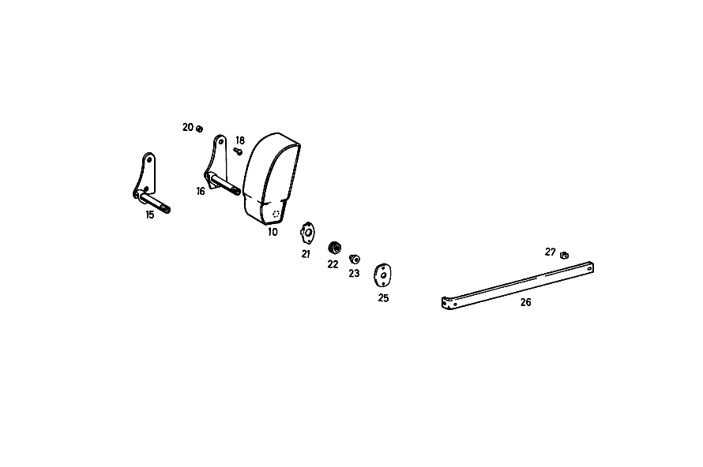

| № | Артикул | Название | Кол. | Примечание | Ограничение |
|---|---|---|---|---|---|
| 10 | A 110 970 11 30 | ПОДЛОКОТНИК ОТКИДН. | - | Z 55.420/21, Z 55.420/22 [415] ПРИМЕЧ. ПО ЗАМЕНЕ ПРИМЕНИМО ТОЛЬКО ДЛЯ СТОЯЩИХ РЯДОМ ПОЗИЦИЙ [002] FROM CHASSIS: 110.010 130558 110.110 225648 111.010 069693 [003] 115 970 14 30,115 970 17 30 LESS RECLINING SEAT FITTINGS;115 970 15 30,115 970 19 30 WITH RECLINING SEAT FITTINGS | |
| 10 | A 111 970 40 30 | ПОДЛОКОТНИК ОТКИДН. | - | Z 55.420/21, Z 55.420/22 [007] NEW PART NUMBER SEE SA 55 920 | |
| 15 | A 110 970 17 20 | - ПОДШИПНИК | - | Z 55.420/21, Z 55.420/23, Z 55.420/25 | |
| 15 | A 110 970 19 20 | - ПОДШИПНИК | - | Z 55.420/22, Z 55.420/24, Z 55.420/26 | |
| 15 | A 110 970 21 20 | - ПОДШИПНИК | 1 | Z 55.420/21, Z 55.420/23, Z 55.420/25, Z 55.420/29 [012] 017 033477, AUSSERDEM EINGEBAUT IN: 110.000,001,010 188272 ON DIESEL VEHICLES 352442 [402] БОЛЬШЕ НЕ ПОСТАВЛЯЕТСЯ | |
| 16 | A 110 970 22 20 | - ПОДШИПНИК | 1 | Z 55.420/22, Z 55.420/24, Z 55.420/26, Z 55.420/30 [018] FROM CHASSIS: 110.010 172574 110.011 022400 110.110 313464 111.010 098339 | |
| 18 | N 000966 006042 | - Винт | 2 | Z 55.420/01, Z 55.420/02, Z 55.420/03, Z 55.420/04 | |
| 18 | N 000966 006042 | - Винт | 2 | Z 55.420/21, Z 55.420/22, Z 55.420/23, Z 55.420/24, Z 55.420/25, Z 55.420/26 | |
| 20 | A 108 973 00 29 | - НАПРАВЛЯЮЩАЯ | 2 | Z 55.420/21, Z 55.420/22, Z 55.420/23, Z 55.420/24, Z 55.420/25, Z 55.420/26 | |
| 21 | A 109 973 00 26 | - УПОР | 1 | Z 55.420/21, Z 55.420/22, Z 55.420/23, Z 55.420/24, Z 55.420/25, Z 55.420/26 | |
| 22 | A 109 990 00 50 | - ГАЙКА | 1 | Z 55.420/21, Z 55.420/22, Z 55.420/23, Z 55.420/24, Z 55.420/25, Z 55.420/26 | |
| 23 | A 109 990 00 12 | - БОЛТ | 1 | Z 55.420/21, Z 55.420/22, Z 55.420/23, Z 55.420/24, Z 55.420/25, Z 55.420/26 | |
| 25 | A 100 973 07 11 | - ПЛАСТИНА | - | Z 55.420/21, Z 55.420/22, Z 55.420/23, Z 55.420/24, Z 55.420/25, Z 55.420/26 | |
| 25 | A 100 973 09 11 | - ПЛАСТИНА | - | Z 55.420/21, Z 55.420/22, Z 55.420/23, Z 55.420/24, Z 55.420/25, Z 55.420/26 [415] ПРИМЕЧ. ПО ЗАМЕНЕ ПРИМЕНИМО ТОЛЬКО ДЛЯ СТОЯЩИХ РЯДОМ ПОЗИЦИЙ | |
| 25 | A 100 973 13 11 | - ПЛАСТИНА | - | Z 55.420/21, Z 55.420/22, Z 55.420/23, Z 55.420/24, Z 55.420/25, Z 55.420/26, Z 55.420/29, Z 55.420/30 | |
| 25 | A 100 973 09 11 | - ПЛАСТИНА | 1 | Z 55.420/21, Z 55.420/22, Z 55.420/23, Z 55.420/24, Z 55.420/25, Z 55.420/26, Z 55.420/29, Z 55.420/30 | |
| 26 | A 110 970 00 15 | - ПЛАНКА | 1 | Z 55.420/21, Z 55.420/23, Z 55.420/25, Z 55.420/29 | |
| 27 | A 000 990 83 91 | - ГАЙКОДЕРЖАТЕЛЬ | - | Z 55.420/21, Z 55.420/23, Z 55.420/25, Z 55.420/29 | |
| 27 | A 000 990 71 91 | - Гайкодержатель | 1 | Z 55.420/21, Z 55.420/23, Z 55.420/25, Z 55.420/29 | |
| A 110 970 04 30 | ПОДЛОКОТНИК ОТКИДН. | - | Z 55.420/01 | ||
| A 110 970 05 30 | ПОДЛОКОТНИК ОТКИДН. | - | Z 55.420/01 [001] UP TO CHASSIS: 110.010 130557 110.110 225647 111.010 069692 111.021,023 086015 [007] NEW PART NUMBER SEE SA 55 920 | ||
| A 112 970 12 30 | ПОДЛОКОТНИК ОТКИДН. | - | Z 55.420/03 | ||
| A 112 970 16 30 | ПОДЛОКОТНИК ОТКИДН. | - | Z 55.420/03 [007] NEW PART NUMBER SEE SA 55 920 [415] ПРИМЕЧ. ПО ЗАМЕНЕ ПРИМЕНИМО ТОЛЬКО ДЛЯ СТОЯЩИХ РЯДОМ ПОЗИЦИЙ [005] UP TO CHASSIS: ON GASOLINE VEHICLES 008321 ON DIESEL VEHICLES 011548 111.010 030694 111.012 064964 111.014 023767 | ||
| A 110 970 06 30 | ПОДЛОКОТНИК ОТКИДН. | - | Z 55.420/03 [007] NEW PART NUMBER SEE SA 55 920 [415] ПРИМЕЧ. ПО ЗАМЕНЕ ПРИМЕНИМО ТОЛЬКО ДЛЯ СТОЯЩИХ РЯДОМ ПОЗИЦИЙ [006] 017 033477, AUSSERDEM EINGEBAUT IN: ON GASOLINE VEHICLES 008322-093432 ON DIESEL VEHICLES 011549-150835 111.010 030695-060200 111.012 064965-130012 | ||
| A 112 970 13 30 | ПОДЛОКОТНИК ОТКИДН. | - | Z 55.420/04 | ||
| A 112 970 17 30 | ПОДЛОКОТНИК ОТКИДН. | - | Z 55.420/04 [001] UP TO CHASSIS: 110.010 130557 110.110 225647 111.010 069692 111.021,023 086015 [007] NEW PART NUMBER SEE SA 55 920 | ||
| A 112 970 28 30 | ПОДЛОКОТНИК ОТКИДН. | - | Z 55.420/01, Z 55.420/02, Z 55.420/03, Z 55.420/04 [001] UP TO CHASSIS: 110.010 130557 110.110 225647 111.010 069692 111.021,023 086015 [007] NEW PART NUMBER SEE SA 55 920 | ||
| A 112 970 08 30 | ПОДЛОКОТНИК ОТКИДН. | 1 | КРЕПЁЖН. МАТЕРИАЛ Рулевое управление: Влево Z 55.420/01, Z 55.420/03, Z 55.420/04 [008] UP TO CHASSIS: 111.010 025025 | ||
| A 112 970 07 30 | ПОДЛОКОТНИК ОТКИДН. | 1 | КРЕПЁЖН. МАТЕРИАЛ Рулевое управление: Вправо Z 55.420/01, Z 55.420/03, Z 55.420/04 [008] UP TO CHASSIS: 111.010 025025 | ||
| A 112 970 09 30 | КРЕП. МАТЕРИАЛ | 1 | КРЕПЁЖН. МАТЕРИАЛ Рулевое управление: Влево Z 55.420/01, Z 55.420/02, Z 55.420/03, Z 55.420/04 [001] UP TO CHASSIS: 110.010 130557 110.110 225647 111.010 069692 111.021,023 086015 [009] FROM CHASSIS: 111.010 025026 | ||
| A 112 970 10 30 | КРЕП. МАТЕРИАЛ | 1 | КРЕПЁЖН. МАТЕРИАЛ Рулевое управление: Вправо Z 55.420/01, Z 55.420/02, Z 55.420/03, Z 55.420/04 [001] UP TO CHASSIS: 110.010 130557 110.110 225647 111.010 069692 111.021,023 086015 [009] FROM CHASSIS: 111.010 025026 | ||
| A 110 970 62 30 | ПОДЛОКОТНИК ОТКИДН. | 1 | MOUNTING MATERIAL Z 55.420/01, Z 55.420/02, Z 55.420/03, Z 55.420/04 | ||
| A 112 973 01 11 | - ПЛАСТИНА | 1 | ВНУТР. Z 55.420/01, Z 55.420/02, Z 55.420/03, Z 55.420/04 [001] UP TO CHASSIS: 110.010 130557 110.110 225647 111.010 069692 111.021,023 086015 | ||
| A 112 973 02 11 | - ПЛАСТИНА | 1 | СНАРУЖИ Z 55.420/01, Z 55.420/02, Z 55.420/03, Z 55.420/04 [001] UP TO CHASSIS: 110.010 130557 110.110 225647 111.010 069692 111.021,023 086015 | ||
| A 112 990 00 31 | - БОЛТ | 8 | Z 55.420/01, Z 55.420/02, Z 55.420/03, Z 55.420/04 [001] UP TO CHASSIS: 110.010 130557 110.110 225647 111.010 069692 111.021,023 086015 | ||
| A 112 970 02 20 | - ПОДШИПНИК | 1 | Рулевое управление: Влево Z 55.420/01, Z 55.420/02, Z 55.420/03, Z 55.420/04 [010] UP TO CHASSIS: 111.010 008877 111.012 018621 111.014 005367 | ||
| A 112 970 01 20 | - ПОДШИПНИК | 1 | Рулевое управление: Вправо Z 55.420/01, Z 55.420/02, Z 55.420/03, Z 55.420/04 [010] UP TO CHASSIS: 111.010 008877 111.012 018621 111.014 005367 | ||
| A 112 970 11 20 | - ПОДШИПНИК | 1 | Рулевое управление: Влево Z 55.420/01, Z 55.420/03, Z 55.420/04 [008] UP TO CHASSIS: 111.010 025025 [011] FROM CHASSIS: 111.010 008878 111.012 018622 111.014 005368 | ||
| A 112 970 10 20 | - ПОДШИПНИК | 1 | Рулевое управление: Вправо Z 55.420/01, Z 55.420/03, Z 55.420/04 [008] UP TO CHASSIS: 111.010 025025 [011] FROM CHASSIS: 111.010 008878 111.012 018622 111.014 005368 | ||
| A 115 970 03 20 | ПОДШИПНИК | 1 | Z 55.420/01, Z 55.420/02, Z 55.420/03, Z 55.420/04 | ||
| A 112 970 13 20 | - ПОДШИПНИК | - | Рулевое управление: Влево Z 55.420/01, Z 55.420/03, Z 55.420/04 | ||
| A 112 970 12 20 | - ПОДШИПНИК | - | Рулевое управление: Вправо Z 55.420/01, Z 55.420/03, Z 55.420/04 | ||
| A 112 970 18 20 | - ПОДШИПНИК | 1 | Рулевое управление: Влево Z 55.420/01, Z 55.420/03, Z 55.420/04 [001] UP TO CHASSIS: 110.010 130557 110.110 225647 111.010 069692 111.021,023 086015 [012] 017 033477, AUSSERDEM EINGEBAUT IN: 110.000,001,010 188272 ON DIESEL VEHICLES 352442 | ||
| A 112 970 17 20 | - ПОДШИПНИК | 1 | Рулевое управление: Вправо Z 55.420/01, Z 55.420/03, Z 55.420/04 [001] UP TO CHASSIS: 110.010 130557 110.110 225647 111.010 069692 111.021,023 086015 [011] FROM CHASSIS: 111.010 008878 111.012 018622 111.014 005368 | ||
| A 110 990 03 31 | - БОЛТ | - | Z 55.420/01, Z 55.420/02, Z 55.420/03, Z 55.420/04 | ||
| A 110 990 04 31 | - БОЛТ | - | Z 55.420/01, Z 55.420/02, Z 55.420/03, Z 55.420/04 | ||
| A 112 973 00 71 | - БОЛТ | 1 | Z 55.420/01, Z 55.420/02, Z 55.420/03, Z 55.420/04 [001] UP TO CHASSIS: 110.010 130557 110.110 225647 111.010 069692 111.021,023 086015 | ||
| N 000137 018203 | - ШАЙБА ПРУЖИННАЯ | 1 | Z 55.420/01, Z 55.420/02, Z 55.420/03, Z 55.420/04 [001] UP TO CHASSIS: 110.010 130557 110.110 225647 111.010 069692 111.021,023 086015 | ||
| A 112 994 00 12 | - ПРЕДОХРАНИТЕЛЬ | 1 | Z 55.420/01, Z 55.420/02, Z 55.420/03, Z 55.420/04 [001] UP TO CHASSIS: 110.010 130557 110.110 225647 111.010 069692 111.021,023 086015 | ||
| A 111 990 28 40 | - ШАЙБА | 1 | Z 55.420/01, Z 55.420/02, Z 55.420/03, Z 55.420/04 [402] БОЛЬШЕ НЕ ПОСТАВЛЯЕТСЯ | ||
| A 112 973 00 37 | - ПРОСТАВКА | 1 | Z 55.420/01, Z 55.420/03, Z 55.420/04 [008] UP TO CHASSIS: 111.010 025025 | ||
| A 110 970 07 30 | ПОДЛОКОТНИК ОТКИДН. | - | Z 55.420/19, Z 55.420/20 [001] UP TO CHASSIS: 110.010 130557 110.110 225647 111.010 069692 111.021,023 086015 [007] NEW PART NUMBER SEE SA 55 920 [013] 017 033477, AUSSERDEM EINGEBAUT IN: ON GASOLINE VEHICLES 093433 ON DIESEL VEHICLES 150836 111.010 060201 111.012 130013 111.014 063007 | ||
| A 112 970 09 30 | КРЕП. МАТЕРИАЛ | 1 | КРЕПЁЖН. МАТЕРИАЛ Рулевое управление: Влево Z 55.420/11, Z 55.420/13, Z 55.420/14, Z 55.420/19, Z 55.420/20 [001] UP TO CHASSIS: 110.010 130557 110.110 225647 111.010 069692 111.021,023 086015 [009] FROM CHASSIS: 111.010 025026 | ||
| A 112 970 10 30 | КРЕП. МАТЕРИАЛ | 1 | КРЕПЁЖН. МАТЕРИАЛ Рулевое управление: Вправо Z 55.420/11, Z 55.420/13, Z 55.420/14, Z 55.420/19, Z 55.420/20 [001] UP TO CHASSIS: 110.010 130557 110.110 225647 111.010 069692 111.021,023 086015 [009] FROM CHASSIS: 111.010 025026 | ||
| A 110 970 62 30 | ПОДЛОКОТНИК ОТКИДН. | 1 | КРЕПЁЖН. МАТЕРИАЛ Z 55.420/11, Z 55.420/13, Z 55.420/14, Z 55.420/19, Z 55.420/20 | ||
| A 112 973 01 11 | - ПЛАСТИНА | 1 | ВНУТР. Z 55.420/11, Z 55.420/13, Z 55.420/14, Z 55.420/17, Z 55.420/18, Z 55.420/19, Z 55.420/20 [001] UP TO CHASSIS: 110.010 130557 110.110 225647 111.010 069692 111.021,023 086015 | ||
| A 112 973 02 11 | - ПЛАСТИНА | 1 | СНАРУЖИ Z 55.420/11, Z 55.420/13, Z 55.420/14, Z 55.420/17, Z 55.420/18, Z 55.420/19, Z 55.420/20 [001] UP TO CHASSIS: 110.010 130557 110.110 225647 111.010 069692 111.021,023 086015 | ||
| A 112 990 00 31 | - БОЛТ | 8 | Z 55.420/11, Z 55.420/13, Z 55.420/14, Z 55.420/17, Z 55.420/18, Z 55.420/19, Z 55.420/20 [001] UP TO CHASSIS: 110.010 130557 110.110 225647 111.010 069692 111.021,023 086015 | ||
| A 112 970 02 20 | - ПОДШИПНИК | 1 | Рулевое управление: Влево Z 55.420/19 [010] UP TO CHASSIS: 111.010 008877 111.012 018621 111.014 005367 | ||
| A 112 970 01 20 | - ПОДШИПНИК | 1 | Рулевое управление: Вправо Z 55.420/19 [010] UP TO CHASSIS: 111.010 008877 111.012 018621 111.014 005367 | ||
| A 112 970 04 20 | - ПОДШИПНИК | 1 | Рулевое управление: Влево Z 55.420/11, Z 55.420/13, Z 55.420/14, Z 55.420/17, Z 55.420/18, Z 55.420/20 | ||
| A 112 970 03 20 | - ПОДШИПНИК | 1 | Рулевое управление: Вправо Z 55.420/11, Z 55.420/13, Z 55.420/14, Z 55.420/17, Z 55.420/18, Z 55.420/20 | ||
| A 115 970 03 20 | - ПОДШИПНИК | 1 | Z 55.420/11, Z 55.420/13, Z 55.420/14, Z 55.420/19, Z 55.420/20 | ||
| A 112 970 13 20 | - ПОДШИПНИК | - | Рулевое управление: Влево Z 55.420/11, Z 55.420/13, Z 55.420/14, Z 55.420/19, Z 55.420/20 | ||
| A 112 970 12 20 | - ПОДШИПНИК | - | Рулевое управление: Вправо Z 55.420/11, Z 55.420/13, Z 55.420/14, Z 55.420/19, Z 55.420/20 | ||
| A 112 970 18 20 | - ПОДШИПНИК | 1 | Рулевое управление: Влево Z 55.420/11, Z 55.420/13, Z 55.420/14, Z 55.420/19, Z 55.420/20 [001] UP TO CHASSIS: 110.010 130557 110.110 225647 111.010 069692 111.021,023 086015 [011] FROM CHASSIS: 111.010 008878 111.012 018622 111.014 005368 | ||
| A 112 970 17 20 | - ПОДШИПНИК | 1 | Рулевое управление: Вправо Z 55.420/11, Z 55.420/13, Z 55.420/14, Z 55.420/19, Z 55.420/20 [001] UP TO CHASSIS: 110.010 130557 110.110 225647 111.010 069692 111.021,023 086015 [011] FROM CHASSIS: 111.010 008878 111.012 018622 111.014 005368 | ||
| A 110 990 03 31 | - БОЛТ | - | Z 55.420/11, Z 55.420/13, Z 55.420/14, Z 55.420/17, Z 55.420/18, Z 55.420/19, Z 55.420/20 | ||
| A 110 990 04 31 | - БОЛТ | - | Z 55.420/11, Z 55.420/13, Z 55.420/14, Z 55.420/17, Z 55.420/18, Z 55.420/19, Z 55.420/20 | ||
| N 000966 006042 | - Винт | 2 | Z 55.420/11, Z 55.420/13, Z 55.420/14, Z 55.420/17, Z 55.420/18, Z 55.420/19, Z 55.420/20 | ||
| A 112 973 00 71 | - БОЛТ | 1 | Z 55.420/11, Z 55.420/13, Z 55.420/14, Z 55.420/17, Z 55.420/18, Z 55.420/19, Z 55.420/20 [001] UP TO CHASSIS: 110.010 130557 110.110 225647 111.010 069692 111.021,023 086015 | ||
| N 000137 018203 | - ШАЙБА ПРУЖИННАЯ | 1 | Z 55.420/11, Z 55.420/13, Z 55.420/14, Z 55.420/17, Z 55.420/18, Z 55.420/19, Z 55.420/20 [001] UP TO CHASSIS: 110.010 130557 110.110 225647 111.010 069692 111.021,023 086015 | ||
| A 112 994 00 12 | - ПРЕДОХРАНИТЕЛЬ | 1 | Z 55.420/11, Z 55.420/13, Z 55.420/14, Z 55.420/17, Z 55.420/18, Z 55.420/19, Z 55.420/20 [001] UP TO CHASSIS: 110.010 130557 110.110 225647 111.010 069692 111.021,023 086015 | ||
| A 111 990 28 40 | - ШАЙБА | 1 | Z 55.420/11, Z 55.420/13, Z 55.420/14, Z 55.420/17, Z 55.420/18, Z 55.420/19, Z 55.420/20 [402] БОЛЬШЕ НЕ ПОСТАВЛЯЕТСЯ | ||
| A 110 970 23 30 | ПОДЛОКОТНИК ОТКИДН. | - | Z 55.420/23, Z 55.420/24 [415] ПРИМЕЧ. ПО ЗАМЕНЕ ПРИМЕНИМО ТОЛЬКО ДЛЯ СТОЯЩИХ РЯДОМ ПОЗИЦИЙ [002] FROM CHASSIS: 110.010 130558 110.110 225648 111.010 069693 [003] 115 970 14 30,115 970 17 30 LESS RECLINING SEAT FITTINGS;115 970 15 30,115 970 19 30 WITH RECLINING SEAT FITTINGS | ||
| A 110 970 41 30 | ПОДЛОКОТНИК ОТКИДН. | - | Z 55.420/23, Z 55.420/24 [007] NEW PART NUMBER SEE SA 55 920 | ||
| A 110 970 21 30 | ПОДЛОКОТНИК ОТКИДН. | - | Z 55.420/25, Z 55.420/26 [415] ПРИМЕЧ. ПО ЗАМЕНЕ ПРИМЕНИМО ТОЛЬКО ДЛЯ СТОЯЩИХ РЯДОМ ПОЗИЦИЙ [002] FROM CHASSIS: 110.010 130558 110.110 225648 111.010 069693 [003] 115 970 14 30,115 970 17 30 LESS RECLINING SEAT FITTINGS;115 970 15 30,115 970 19 30 WITH RECLINING SEAT FITTINGS | ||
| A 110 970 42 30 | ПОДЛОКОТНИК ОТКИДН. | - | Z 55.420/25, Z 55.420/26 | ||
| A 000 987 47 72 | - ЗАЩИТА КРОМОК | 2 | ЗАКАЗЫВАТЬ ПОГОННЫМИ МЕТРАМИ 150mm Z 55.420/21, Z 55.420/22, Z 55.420/23, Z 55.420/24, Z 55.420/25, Z 55.420/26, Z 55.420/29, Z 55.420/30 | ||
| A 000 987 45 72 | - ЗАЩИТА КРОМОК | 1 | ЗАКАЗЫВАТЬ ПОГОННЫМИ МЕТРАМИ 170mm Z 55.420/21, Z 55.420/22, Z 55.420/23, Z 55.420/24, Z 55.420/25, Z 55.420/26, Z 55.420/29, Z 55.420/30 | ||
| A 110 970 27 30 | ПОДЛОКОТНИК ОТКИДН. | - | Z 55.420/21, Z 55.420/22, Z 55.420/23, Z 55.420/24, Z 55.420/25, Z 55.420/26 [415] ПРИМЕЧ. ПО ЗАМЕНЕ ПРИМЕНИМО ТОЛЬКО ДЛЯ СТОЯЩИХ РЯДОМ ПОЗИЦИЙ [002] FROM CHASSIS: 110.010 130558 110.110 225648 111.010 069693 [003] 115 970 14 30,115 970 17 30 LESS RECLINING SEAT FITTINGS;115 970 15 30,115 970 19 30 WITH RECLINING SEAT FITTINGS | ||
| A 110 970 52 30 | ПОДЛОКОТНИК ОТКИДН. | - | Z 55.420/21, Z 55.420/22, Z 55.420/23, Z 55.420/24, Z 55.420/25, Z 55.420/26 [007] NEW PART NUMBER SEE SA 55 920 | ||
| A 112 970 37 30 | КРЕП. МАТЕРИАЛ | 1 | КРЕПЁЖН. МАТЕРИАЛ Z 55.420/21, Z 55.420/23, Z 55.420/25 [002] FROM CHASSIS: 110.010 130558 110.110 225648 111.010 069693 [015] UP TO CHASSIS: 110.010 165210 110.011 018662 110.110 296176 111.010 094001 | ||
| A 112 970 39 30 | КРЕП. МАТЕРИАЛ | 1 | КРЕПЁЖН. МАТЕРИАЛ Z 55.420/22, Z 55.420/24, Z 55.420/26 [002] FROM CHASSIS: 110.010 130558 110.110 225648 111.010 069693 [016] UP TO CHASSIS: 110.010 172573 110.011 022399 110.110 313463 111.010 098338 | ||
| A 110 970 50 30 | КРЕП. МАТЕРИАЛ | 1 | КРЕПЁЖН. МАТЕРИАЛ Z 55.420/21, Z 55.420/23, Z 55.420/25, Z 55.420/29 [017] FROM CHASSIS: 110.010 165211 110.011 018663 110.110 296177 111.010 094002 | ||
| A 110 970 62 30 | ПОДЛОКОТНИК ОТКИДН. | 1 | КРЕПЁЖН. МАТЕРИАЛ Z 55.420/21, Z 55.420/22, Z 55.420/23, Z 55.420/24, Z 55.420/25, Z 55.420/26 | ||
| A 110 970 51 30 | КРЕП. МАТЕРИАЛ | 1 | Z 55.420/22, Z 55.420/24, Z 55.420/26, Z 55.420/30 | ||
| A 110 970 53 30 | КРЕП. МАТЕРИАЛ | 1 | Z 55.420/22, Z 55.420/24, Z 55.420/26, Z 55.420/30 | ||
| A 110 970 01 20 | - ПОДШИПНИК | 1 | Z 55.420/21, Z 55.420/23, Z 55.420/25 [002] FROM CHASSIS: 110.010 130558 110.110 225648 111.010 069693 [015] UP TO CHASSIS: 110.010 165210 110.011 018662 110.110 296176 111.010 094001 | ||
| A 110 970 07 20 | - ПОДШИПНИК | 1 | Z 55.420/22, Z 55.420/24, Z 55.420/26 [002] FROM CHASSIS: 110.010 130558 110.110 225648 111.010 069693 [016] UP TO CHASSIS: 110.010 172573 110.011 022399 110.110 313463 111.010 098338 | ||
| A 110 970 23 20 | - ПОДШИПНИК | 1 | Z 55.420/22, Z 55.420/24, Z 55.420/26, Z 55.420/30 | ||
| A 110 970 03 20 | - ПОДШИПНИК | 1 | Z 55.420/21, Z 55.420/22, Z 55.420/23, Z 55.420/24, Z 55.420/25, Z 55.420/26 | ||
| A 110 990 03 31 | - БОЛТ | - | Z 55.420/21, Z 55.420/22, Z 55.420/23, Z 55.420/24, Z 55.420/25, Z 55.420/26 | ||
| A 110 990 04 31 | - БОЛТ | - | Z 55.420/21, Z 55.420/22, Z 55.420/23, Z 55.420/24, Z 55.420/25, Z 55.420/26 | ||
| A 115 990 00 31 | - БОЛТ | - | Z 55.420/22, Z 55.420/24, Z 55.420/26, Z 55.420/30 | ||
| N 007988 006169 | - БОЛТ | 2 | Z 55.420/22, Z 55.420/24, Z 55.420/26, Z 55.420/30 [402] БОЛЬШЕ НЕ ПОСТАВЛЯЕТСЯ | ||
| N 000966 006042 | - Винт | 2 | Z 55.420/21, Z 55.420/23, Z 55.420/25, Z 55.420/29 | ||
| N 000934 006013 | - Гайка | - | Z 55.420/21, Z 55.420/23, Z 55.420/25, Z 55.420/29 | ||
| N 304032 006008 | - Шестигранная гайка | 1 | Z 55.420/21, Z 55.420/23, Z 55.420/25, Z 55.420/29 | ||
| A 094 990 68 10 | - Пружинное кольцо | 1 | Z 55.420/21, Z 55.420/23, Z 55.420/25, Z 55.420/29 | ||
| N 000125 006407 | - ШАЙБА | 1 | Z 55.420/21, Z 55.420/23, Z 55.420/25, Z 55.420/29 | ||
| N 000966 006021 | - Винт | 2 | Z 55.420/21, Z 55.420/22, Z 55.420/23, Z 55.420/24, Z 55.420/25, Z 55.420/26 | ||
| A 111 990 28 40 | - ШАЙБА | 1 | Z 55.420/21, Z 55.420/22, Z 55.420/23, Z 55.420/24, Z 55.420/25, Z 55.420/26 [402] БОЛЬШЕ НЕ ПОСТАВЛЯЕТСЯ | ||
| A 109 990 00 60 | - ГАЙКА | - | Z 55.420/21, Z 55.420/22, Z 55.420/23, Z 55.420/24, Z 55.420/25, Z 55.420/26 | ||
| A 109 990 01 60 | - гайка | 1 | Z 55.420/21, Z 55.420/22, Z 55.420/23, Z 55.420/24, Z 55.420/25, Z 55.420/26 | ||
| N 000933 004037 | - БОЛТ | 1 | Z 55.420/21, Z 55.420/22, Z 55.420/23, Z 55.420/24, Z 55.420/25, Z 55.420/26 | ||
| A 109 990 00 01 | - БОЛТ | - | Z 55.420/21, Z 55.420/22, Z 55.420/23, Z 55.420/24, Z 55.420/25, Z 55.420/26 | ||
| N 000933 005036 | - Винт | 1 | Z 55.420/21, Z 55.420/22, Z 55.420/23, Z 55.420/24, Z 55.420/25, Z 55.420/26 | ||
| N 000966 004003 | - Винт | 2 | Z 55.420/21, Z 55.420/22, Z 55.420/23, Z 55.420/24, Z 55.420/25, Z 55.420/26, Z 55.420/29, Z 55.420/30 | ||
| N 000965 006005 | - Винт | 2 | Z 55.420/21, Z 55.420/23, Z 55.420/25, Z 55.420/29 |
Позиций: 110 · подписано на схемах: 19 · колесо — плавный зум в курсор, перетаскивание — пан, двойной клик — зум, клик по артикулу — скопировать · наведите на строку или цифру на схеме — подсветка связки, клик — закрепить.